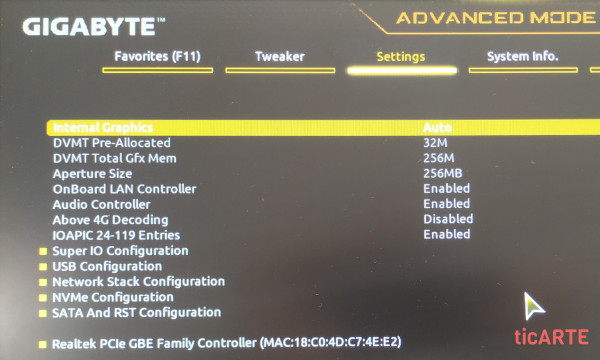
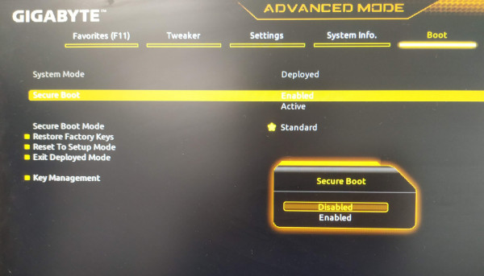

2. BIOS y UEFI: Funcionamiento y Configuración
2.1. El Proceso de Arranque: La Secuencia POST
Desde el instante en que se pulsa el botón de encendido del chasis hasta que el sistema operativo toma el control, la placa base ejecuta una serie de comprobaciones automáticas. Esta rutina se denomina POST (Power-On Self Test o Autodiagnóstico al Encendido).
La secuencia habitual se desglosa en los siguientes pasos:
- Chequeo inicial de hardware: Con el monitor aún en reposo, se verifica el procesador, la integridad del firmware y los circuitos esenciales. Si se detecta un fallo grave, la placa base avisa mediante una secuencia de pitidos (beep codes) a través del beeper o mediante los LEDs de diagnóstico (EZ Debug LEDs). Si no hay errores, suele emitir un único pitido corto.
- Inicialización de la pantalla: Se enciende el monitor y se presenta la información de la tarjeta gráfica y la versión del firmware.
- Comprobación de memoria y microprocesador: Se cuenta la memoria RAM disponible, se analiza el modo de trabajo (Single o Dual Channel) y se valida el modelo y frecuencia de la CPU.
- Detección de almacenamiento: Se rastrean y enumeran los discos duros, SSDs (SATA y NVMe) y unidades ópticas.
- Información de acceso: Se muestra en pantalla la tecla asignada para entrar al menú de configuración (Setup) o para abrir el menú de selección de arranque puntual (Boot Menu).
- Reconocimiento de periféricos Plug & Play: Se configuran las tarjetas de expansión y los controladores integrados.
- Traspaso al sistema operativo: Se busca el cargador de arranque en el primer dispositivo válido definido en la secuencia de prioridades.
Teclas útiles durante el POST
- Tecla Pausa (Break): Detiene la pantalla en cualquier punto del POST para leer mensajes de diagnóstico o datos del hardware.
- Ctrl + Alt + Supr: Provoca un reinicio inmediato del equipo sin cortar el suministro eléctrico.
2.2. Acceso a la Interfaz de Configuración (Setup)
Para entrar en la utilidad de configuración es necesario pulsar repetidamente la tecla correspondiente inmediatamente después de pulsar el botón de encendido.
- En la inmensa mayoría de placas de sobremesa (ASUS, Gigabyte, MSI, ASRock) se utiliza la tecla
Supr(Delete) o la teclaF2. - En ordenadores portátiles de marca (HP, Lenovo, Dell) pueden utilizarse también teclas como
F1,F10oEsc. - En la pantalla inicial del POST suele aparecer indicado un mensaje como:
<DEL>: BIOS Setup <F12>: Boot Menu
2.3. Opciones de Configuración más Comunes
Aunque la disposición de los menús varía según el fabricante, las utilidades de configuración agrupan los ajustes en bloques temáticos:

1. Fecha y Hora del Sistema (Date & Time)
Permite ajustar manualmente el reloj de tiempo real (RTC) integrado en la placa. Este reloj se mantiene en hora gracias a la pila de litio cuando el equipo está desconectado de la pared.
2. Dispositivos Integrados (Integrated Peripherals)
Permite habilitar, deshabilitar o configurar los chips integrados en el circuito impreso:
- Controladoras SATA (modo AHCI recomendado para SSDs modernos; modo IDE en desuso).
- Controladora de red local Ethernet (OnBoard LAN).
- Tarjeta de sonido integrada (Audio Controller / Azalia Codec).
- Gráficos integrados en el procesador (Internal Graphics) y cantidad de memoria RAM compartida asignada a vídeo (DVMT).
3. Secuencia de Arranque (Boot Priority)
Determina el orden en el que el ordenador buscará el sistema operativo:
- Primera opción (First Boot Device): por ejemplo, Unidad USB extraíble.
- Segunda opción (Second Boot Device): SSD principal con el sistema operativo instalado.
- Tercera opción (Third Boot Device): Disco duro secundario o arranque por red (PXE).
Si se quiere reinstalar un sistema operativo desde un pendrive, se debe situar la unidad USB en la primera posición de esta lista (o invocar el menú puntual con la tecla de Boot Menu).
4. Arranque Seguro (Secure Boot)
Tecnología propia de UEFI que impide que el equipo cargue controladores o cargadores de arranque no firmados digitalmente por certificados de confianza, protegiendo al equipo frente a malware de tipo bootkit. Puede ajustarse entre Enabled (habilitado) y Disabled (deshabilitado).

5. Opciones de Seguridad y Contraseñas (Security)
- Supervisor Password: Contraseña que restringe el acceso al menú de configuración para evitar cambios no autorizados.
- User Password: Contraseña requerida en cada encendido para permitir el arranque del sistema operativo.
6. Guardado, Salida y Restauración
- Save & Exit (F10): Graba los cambios en la memoria de configuración y reinicia el equipo.
- Exit Without Saving (Esc): Sale descartando cualquier modificación hecha en la sesión.
- Load Optimized Defaults: Carga la configuración recomendada por el fabricante para un funcionamiento estable y óptimo.
- Load Fail-Safe Defaults: Carga una configuración conservadora y básica, pensada para solucionar bloqueos de hardware o fallos tras sobreaceleración.